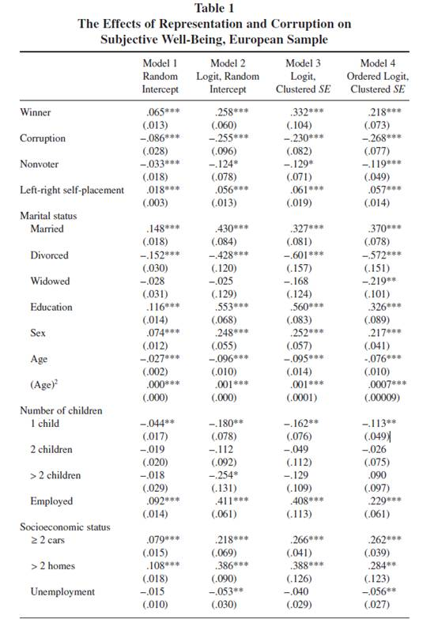
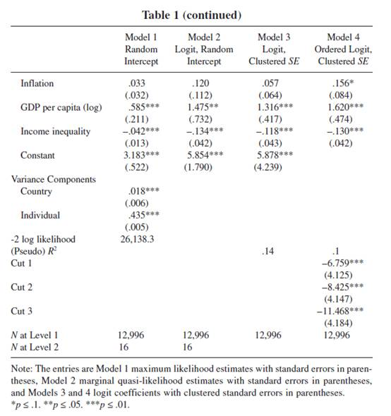
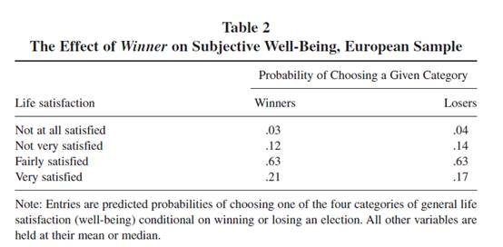
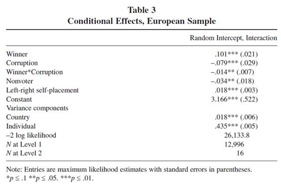
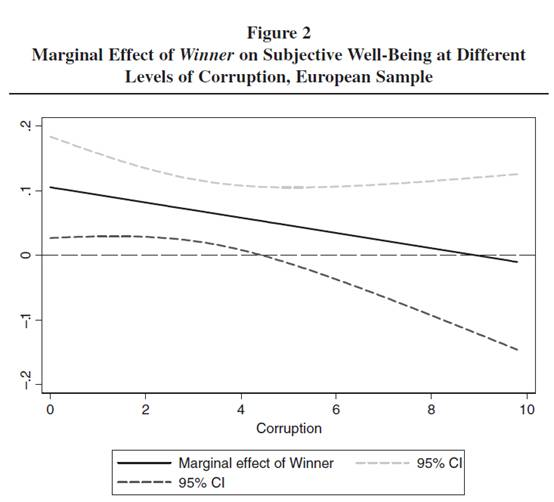
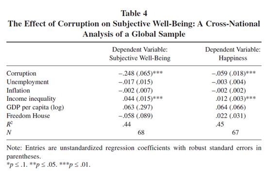

收录于合集
#政治态度 13 个
#比较政治学 121 个
文献来源：Margit Tavits,“Representation, Corruption, and Subjective Well-Being,” Comparative Political Studies,Vol.41,No.12（December 2008）,pp.1607-1630
Margit Tavits ，华盛顿大学（圣路易斯）政治科学系教授，研究专长为比较政治学，研究兴趣主要集中在政党政治、政治制度、政治腐败、后共产主义国家政治与性别平等
个人主页：http://pages.wustl.edu/tavits
尽管政治科学家关注政府与民主满意度，但很少像经济学家和心理学家那样关注个人的主观幸福感（生活满意度）。最近的研究揭示民众的满意度与宏观经济和社会进程有关，但是政府的行为在多大程度上影响了民众的满意度这一问题仍然有待回答。尽管既有的研究都指向政府的代表性、政策输出以及政府质量影响生活满意度，但是针对个体的认知仍然需要通过实证研究加以检验。当前的研究认为代表制和政府绩效是影响民众生活满意度的主要原因，本文以 68个跨国数据和16个欧洲民主国家的调查数据为依托进行研究，其结论是更好的代表制有利于增强民众的满意度，而越高的政治腐败则会严重地削弱民众的满意度。同时，相比宏观经济对幸福感的影响，政治腐败的效应要更加稳健，这也是代表制增强幸福感的条件。只有当赢得选举的政党及其组织的政府清廉而不腐败时，支持当选的政党才与选民的主观幸福感相关。
一、关于幸福感的文献探讨
经济学、心理学和社会学对幸福感的探讨已经卷帙浩繁，而且还在不断推陈出新。在经济学界，对幸福感的讨论常常是与效用联系在一起的。而政治学更多地从政体类型、政治与经济自由来讨论个体的幸福感。此外，还有研究指出，左翼政党的执政与工会的强度也和主观幸福感存在强烈的联系。但是作者指出，这些既有的研究都过于具体，需要从更抽象的层面来谈论民主政府及其行为。
二、代表制、腐败与幸福感
尽管代表制是公民影响政府决策的关键机制，但是这种机制是否作用以及如何作用于主观幸福感的质量对民主理论家而言格外重要。同样，政府程序和产出也直接作用于民众的主观幸福感。因此，政府作为的质量和公正性就是探讨民众幸福感的关切了。
就代表制而言，当人们被真正代表时他们就会感到幸福。因为当选民支持的政党赢得选举并组织政府时，人民认为有理由相信执政者与他们具有相同的意识形态，会从他们真正的利益出发制定政策。同时，民众通过参与投票实现了自身价值。但是显而易见的是，正如变量之间的内生性问题，这些机制彼此之间也会相互影响。比如选民可以通过选举来实现这个有价值的目标，也可能是这个目标有价值才促使选民去投票。基于此，作者指出本文的因果机制建立在选举的结果和政府的形成作用于民众的主观幸福感这一逻辑基础之上。
就政府质量而言，腐败程度是目前广泛使用的测量指标，其理由在于政治腐败阻碍了公共产品服务于民众的正常机制，影响到公共目标和公共价值的实现，同时也是加剧犯罪和社会不公正进一步恶化的诱因，明显的降低公众的幸福感，然而这只是传统的表述。作者指出腐败也会通过损害民主制度来降低公众幸福感。为何如此？作者在本文中提出假设：更好的代表制与更廉洁的政府与个人幸福感之间存在正相关。后文的选取数据、建立模型也将围绕这一假设进行验证。
三、数据、测量与模型
作者首先选取欧洲晴雨表（Eurobarometer）1995年数据。该数据来自对欧洲16个国家17166个居民的调查，其优点是可以统合个体层面和国家层面数据，因此用做主要检验。但是其缺点在于还不足以说明世界范围内的情况，为此，作者选用世界价值观调查（World Value Survey）数据中对68个国家的调查做进一步检验。
在变量选取方面，作者将居民的主观幸福感（生活满意度）作为因变量，其中第一个自变量选自腐败预测指数（Corruption Perception Index，CPI），而另一个自变量则参考欧洲政治研究杂志（European Journal of Political Research）和世界政治领导人（World Political Leaders）数据库，该数据库记录了主要国家选举之后当选政党的情况，同时包括选民对该政党及主要议题投票赞成、反对以及弃权的情况。此外，作者将人口学变量（性别、年龄、物质条件、家里小孩数等）和社会经济变量（收入、失业情况等）作为控制变量。
在模型层面，作者选用HLM（分层线性回归模型）和逻辑回归模型，用来检验自变量分别在国家和个人两个层面对因变量的影响，并也可以同时实现Robustness的目标。具体而言，作者建构了四个模型，模型1是分层简单线性随机截距模型(random intercept model in HLM)，模型2采用逻辑回归随机截距模型(Random intercept model in LogR )。模型1和2和主要差别在于将定序自变量变成名义二分变量，并混合国家和个体效应，这样做可以对冲异方差带来的参数估计不一致问题，保持截距部分的“随机特质”。模型3和4都采用逻辑回归模型，并混合了国家和个体差异，模型3继续采用因变量为名义二分变量的逻辑回归模型，模型4则使用了初始的因变量形式，即具有定序性质的四分感知度，并代入回归模型，从而可以用来观测内部断点处的影响效应是否显著，在更高的水平位上比较变量间作用关系的“微观有效性”。此外，针对样本中存在的缺失值，作者采用了多重插补（multiple imputations）的方法，对比方差发现缺失值并未对整体结论产生偏误。通过比对四个模型主要参数的输出结果，自变量在两层以及不同模型中都具有显著影响。






四、结论：
作者在建模前的假设得以论证成立，代表制与政府廉洁度能显著地影响人们幸福感。具而言之，当人们认为在他们能更好地被代表时和政府保持清廉时会感到幸福。因此，选举不仅在于确保谁能得到权力，更是人们追求幸福的条件。进一步，腐败有助于我们理解选举的胜利或者失败能在多大程度上影响公众的幸福感。在变量的影响方面，政治腐败显著地削弱了以失业率和通胀率测量指标的经济因素影响，同时，它还扩宽了我们对腐败自身的理解——它不仅应当被用于测量政府提供公共产品的质量，也是测量民主健康程度的关键指标。同时，在政治系统的输入端，政治腐败是连接民众与政府之间并使民主运转起来的介质。此外，腐败并不是同质的，它有各种类型，后续的研究需要研究腐败的两个方面及与公众之间的相互作用。
作者最后指出，尽管结论经得起稳健性检验，但是当下数据中的观察值只是一年的数据，对跨年度数据的使用和测算的结果还不明朗。其次，文章检验的都是欧洲发达民主国家，得出的结论并不能保证普遍化。再者，文章对政府绩效作用的探讨仍然是总体层面，但是个人与官僚机构打交道的经历对自身层面的主观幸福感依然会产生重要影响，而且这些经历可能比总体性层面的腐败发挥出更重要的影响。
编后记：
在这篇文章中，作者使用的数据和模型都不是特别生僻，但因为将理论、机制和数据较为流畅地结合在一起，所以发在了比较政治研究的国际顶级刊物CPS上。作者在文末提了尚未解决的一些问题。这些问题确实是我们现在需要持续追踪的问题，而这些问题的最终解决既有赖于民意调查技术和问卷设计的不断更新，更需要政治理论和方法的不断完备。当然，将民主与主观幸福感结合在一起的讨论非常有意义，尽管常用的民主评估体系，诸如“自由之家”(Freedom House)和“政体4”（Polity Ⅳ）依然是研究民主与政体的重要参考标准，但是从公众的主观角度出发去省察也格外重要，只有将两者结合在一起，得出的结论可能更为客观。 毋庸置疑，这种方法对当代中国而言更有持续深入研究的价值。
推荐阅读：
[美]唐文方.如何测量中国民主——关于民主与政治幸福感的讨论[EB /OL].北京：中国人民大学国家发展与战略研究院讲座，2016年12月，http://nads.ruc.edu.cn/upfile/file/20170306161409_643857_56010.pdf
**
**
政观编辑部